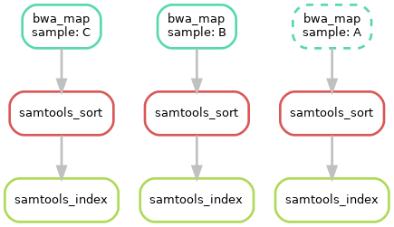

Snakemake --- 生信流程搭建工具
Introduction
Snakemake 用于编写任务流程的一种工具，python
语言编写，可创建 可重复 和 可扩展
的数据分析。同时还可以无缝扩展到服务器、集群、网格和云环境，无需更改工作流定义。
名词解释：
- cluster：集群
- grid：网格
- workflow：工作流
- conda package manager：conda 包管理器
- container virtualization：容器虚拟化
Snakemake 特点：
- 可读性：数据分析工作流是通过 python
的一种易于阅读、适应性强且功能强大的规范语言来定义的。每个
rule描述分析中定义如何从输入文件到输出文件的步骤。rules之间的依赖关系是自动确定的。 - 可移植性：通过
conda package manager和container virtualization集成，每个工作流程步骤的所有软件依赖项都会在执行时自动部署。 - 模块化：通过
script和jupyter notebook集成快速实施分析步骤。轻松创建和使用可重复使用的工具包装器，并将您的数据分析拆分为分离良好的模块。 - 透明化：自动、交互式、独立的报告确保从结果到使用的步骤、参数、代码和软件的完全透明性。
- 可扩展性：工作流从单核无缝扩展到多核、集群或云，无需修改工作流定义并自动避免冗余计算。
Installation
同样的，通过 conda 创建 snakemake
环境。但是当我在服务器上运行
conda create -n snakemake -c bioconda snakemake -y
出现了诡异的报错 ---
CondaValueError: Malformed version string '~': invalid character(s).。通过查阅资料，显示我可能需要对
conda
进行更新才能进行安装，但是由于服务器比较老，经不起折腾，就放弃了更新的方案。后来知晓了
mamba 的存在，很是快速的安装好了。
1 | conda create -n snakemake -c conda-forge mamba -y |
通过 mamba 我很顺利的将 snakemake
安装在服务器上。Snakemake
很适合流程搭建，但是可能是因为功能很强大，我们需要学习它的固定语法，才能更好的应用它，最重要的是其
rules。
Snakemake Tutorial
官网上提供了三种方法运行教程，以方便不同的用户；如 通过
Gitpod 在云端免费运行、Linux or MacOS
X、Windows；据我所知，很少有人会在
Windows
系统进行大量的数据分析，基本都是在服务器上进行，通过 linux
管理环境。所以这里介绍云端和本地服务器的方式来学习
snakemake。
Gitpod：https://gitpod.io/#https://github.com/snakemake/snakemake-tutorial-dataGitpod Tutorial：https://snakemake.readthedocs.io/en/stable/tutorial/setup.html#run-tutorial-for-free-in-the-cloud-via-gitpodLocal：https://github.com/conda-forge/miniforge#mambaforgeLocal Tutorial：https://snakemake.readthedocs.io/en/stable/tutorial/setup.html#running-the-tutorial-on-your-local-machine
下载示例数据
首先，我们在合适的地方创建运行 snakemake 示例的工作目录，并下载示例数据。
1 | mkdir snakemake_tutorial |
运行完上面的代码之后，在工作目录中会有一个 data
文件夹和一个环境文件 environment.yaml。
创建环境
根据 environment.yaml
创建示例运行所需要的环境。这里同样采用 mamba 创建，运行
mamba env create --name snakemake-tutorial --file environment.yaml
即可。
1 | mamba env create --name snakemake-tutorial --file environment.yaml |
激活环境
1 | conda activate snakemake-tutorial |
搭建示例工作流
Snakemake 工作流程是通过在 Snakefile 中指定
rule 来定义的。rule
通过指定如何从输入文件创建输出文件，将工作流分解成诸多小
step。Snakemake 通过匹配文件名自动确定 rule
之间的依赖关系。其扩展了 Python
语言，为规则定义和附加控件添加了语法结构。所有添加的句法结构都以一个
keyword
打头，后跟一个代码块，该代码块要么位于同一行，要么缩进并由多行组成。
示例介绍：来自基因组分析领域。将测序 reads 映射到参考基因组，并在映射的 reads 上调用变体(variants)。通过研究特定基因组位置的映射 reads 和参考基因组之间的差异，可以检测到变异。
更多更详细的介绍请移步：Basics: An example workflow
Step 1：Mapping reads（映射读长）
功能：将给定样本的 reads mapping
到给定的参考基因组。
rule：在工作目录中，新建一个新文件 -
snakefile ，并定义如下规则
1 | rule bwa_map: |
解读：这里创建了一个名为 bwa_map
的规则；input
指示输入的文件路径，可以是相对路径；output
指示程序的数据文件路径及命名；shell 显示规则需要执行的
shell 命令，并通过 {} 表示法来引用 rule
中定义的元素（类似于 python
格式函数）。若规则中存在多个输入文件，则将会以 空格
连接它们，如这里的 {input} 将会在执行命令之前替换成
data/genome.fa data/samples/A.fastq； bwa
将输出通过管道传输到 samtools 中，最后 samtools 的输出使用
> 重定向写入 {output}。也就是说通过上面的
rule，将会在 shell 上运行
bwa mem data/genome.fa data/samples/A.fastq | samtools view -Sb - > mapped_reads/A.bam。
Run：
1 | snakemake -np mapped_reads/A.bam |
snakemake -np mapped_reads/A.bam 并不会运行实际的 shell
命令，只是在终端打印执行计划，-n 即
--dry-run，只是打印，并没有实际执行命令，-p
指示 snakemake 对生成的 shell 命令进行说明。
snakemake --cores 1 mapped_reads/A.bam
将会以一个线程的形式运行上面的 rule。
为了生成目标文件，snakemake 以自上而下的方式应用
snakefile 中给出的规则，应用规则生成一组输出文件被称为一次
job。
- 这里一个常见的错误是存在多个输入文件或多个输出文件时的书写格式，需要注意的是，不能漏了彼此之间的逗号。
- 推荐的做法是将工作流的后续步骤放在一个单独的、唯一的输出文件夹中，这使工作目录保持结构化。此外，这种独特的前缀允许 snakemake 在搜索可以提供请求输入的规则时快速丢弃大多数规则，这加速了工作流中规则依赖关系的解决。
Snakemake在输出文件存在的情况下默认不执行。但是若一个输入文件比一个输出文件新，或者一个输入文件将被另一个作业更新，则 snakemake 就会重新运行作业。
Step 2：Generalizing the read mapping rule（批量化读长映射规则）
通过 Step 1 创建的规则只适用于
data/samples/A.fastq；当我们需要对多个 fastq
文件进行 mapping 时，总不能写好几个一样的 rule
吧！所以，这里通过使用命令通配符来对 rule
进行概括，从而实现批量化。
1 | rule bwa_map: |
如上，我们将 {sample} 替换 bwa_map 规则的
A，这将会使 bwa_map 规则对
data/samples/*.fastq 所有以 fastq
为后缀的文件适配，并生成对应的输出文件 *.bam。而不局限于
A.fastq。
1 | snakemake -np mapped_reads/B.bam |
- 若一个规则有多个输出文件，
snakemake要求它们都具有完全相同的通配符。否则，可能会发生两个并行运行相同规则的作业想要写入同一个文件的情况。
Step 3：Sorting read alignments（对读长比对进行排序）
通过上面的规则，得到比对的 bam 文件，我们需要对 bam
文件中的读长对齐进行排序，这可以通过 samtools sort
命令来实现。
我们可以在上面创建的 snakefile 文件下方添加名为
samtools_sort 的新规则。也就有了：
1 | rule bwa_map: |
如上，将会从 mapped_reads
目录获取输入文件并将排序后的文件存放在 sorted_reads
目录下。Snakemake 允许通过具有每个通配符值的属性的通配符对象访问 shell
命令中的通配符（wildcards）。这里在 samtools 中使用
-T 参数来指定输出文件的前缀。
运行 snakemake -np sorted_reads/B.bam，将会先运行
bwa_map 规则，结束之后再运行 samtools_sort
规则；就像前面谈到的一样，彼此之间的依赖关系通过匹配文件名自动解析。
这里添加的 shell 命令中，我们将字符串分成两行，但是 python 会自动将它们连接成一行。这是一种方便的模式，可以避免太长的 shell 命令行。使用此选项时，请确保在除了最后一行之外的每一行中都有一个尾随空格，以避免参数无法正确分隔。
Step 4：Indexing read alignments and visualizing the DAG of jobs（索引读取比对并可视化作业的 DAG）
这里使用 samtools
来索引排序好的读取比对，以便我们可以通过它们映射到的基因组位置快速访问
reads，于是我们通过添加 samtools_index 规则得到了：
1 | rule bwa_map: |
截至目前，我们创建了三个 rule，可以生成对应的
DAG 来对流程进行可视化；运行
snakemake --dag sorted_reads/{A,B,C}.bam.bai | dot -Tsvg > dag.svg。这是使用
Graphviz 提供的命令创建
DAG 的可视化。对于给定的目标文件，snakemake 以
dot language 指定 DAG，并将其通过管道传递给
dot 命令，从而将定义呈现为 SVG
格式。当然也可以输出为其他格式，如
Png、PDF。结果如下：

DAG
包含每个作业的节点，连接它们的边表示依赖关系，不需要运行的作业（输出文件已存在）框架用虚线表示。对于带有通配符的规则，特定作业的通配符值也会显示在作业节点中。
Step 5：Calling genomic variants（调用基因组变异）
接下来，需要聚合来自所有样本的
mapped reads，并共同调用它们的基因组变异。这一步将会用到
samtools 和 bcftools。Snakemake 提供了一个函数
expand() 来帮助收集输入文件。于是我们得到了如下的规则：
1 | SAMPLES = ["A", "B", "C"] |
对于多个输入或输出文件，有时在 shell
命令中单独引用它们会很方便。这可以通过指定输入或输出文件的名称来实现，如
fa=...。然后可以在 shell 命令中按照名称来引用这些文件，如
{input.fa}。在这里，我们调用 expand()
函数来聚合所有样本的对齐 reads 。
更详细的 expand() 函数介绍请移步：The
expand function
需要了解的是，在输入或输出文件列表中可以包含任意 Python 语句，只要它返回一个字符串或字符串列表即可。
这将在存在多个文件，我们可以通过 python
语句来提取一个文件夹下的所有文件作为 rule
的输入文件。这将会变得很实用。
Step 6：Using custom scripts（使用自定义脚本）
Workflow
不仅能调用各种工具，还包含自定义脚本的调用。此外，snakemake 还允许你在
rule 中直接编写 python 代码。通过 script
指令在 rule 中添加脚本。
1 | SAMPLES = ["A", "B", "C"] |
其中 scripts/plot-quals.py 的详细内容：
1 | import matplotlib |
运行上面的 snakefile ，我们最终将生成已分配给
calls/all.vcf
文件中变体调用的质量分数的直方图。在脚本中，规则的所有属性（如
input、output、wildcards
等）都可以用作全局对象 snakemake 的属性。
当内联代码块包含多于几行代码时，最好使用 script
指令。
snakemake.input 和 snakemake.output
无论其指向的属性是一个还是多个，它都是一个列表；所以引用它时，必须遵循列表的语法，如我们需要取输入文件的第一个文件名，可以这么表示：snakemake.input[0]。
除了引用 python 脚本，snakemake 还可以引用 R
脚本，类似又有一些不同，如在 R 中访问第一个输入文件 ---
snakemake@input[[1]]（需要注意的是，R 是从 1
开始计数，故不存在索引 0）。
更多关于 script 的内容请详阅：External
scripts
Step 7：Adding a target rule（添加目标规则）
截至目前，我们都是通过在命令行指定目标文件来执行
workflow
的，其实除了文件名，如果请求的规则没有通配符，Snakemake 还接受
rule names
作为目标。因此，可以编写手机所需结果或所有结果的特定子集的目标规则。此外，若在命令行中没有给定目标，则
Snakemake 将会以 snakefile 的
第一条规则
定义为目标。所以，最好的解决办法就是在工作流的顶部添加一个
all 规则，该规则将所有需要的目标文件作为输入文件。
1 | rule all: |
这时，运行 Snakemake ，我们只需要输入
snakemake -n。将会显示创建文件 plots/quals.svg
的执行计划，其中包含并总结了我们所有的结果。
Snakemake除了将工作流的第一条规则作为默认目标外，snakefile中的规则顺序是任意的，不会影响作业的DAG。使用
--forcerun参数将会强制重新执行工作流。--reason可以显示每个作业的执行原因。若拥有多个合理的目标文件集，可以在
snakefile的顶部添加多个目标规则。虽然 snakemake 默认执行第一个，但是可以通过命令行定位它们中的任何一个；如snakemake -n mytarget。
Advanced: Decorating the example workflow
Step 1：添加指定的线程数
在 rule 中添加 threads: <int>
指令，并在 shell 中通过 {threads} 来调用。如：
1 | rule bwa_map: |
此外，还可以在命令行中使用 --cores <int>
参数来给定整个工作流的线程数，这里的 --cores 设定的线程数是
rule 中 threads 的上限。
Step 2： 配置文件 ---
config.yaml
配置文件主要存放输入 snakefile 的输入文件。配置文件
config.yaml 可以使用 JSON 或 YAML
来编写。此外，我们还需要在 snakefile 中指定配置文件，添加
configfile: "config.yaml"。在这里将
config.yaml 设置成：
1 | ## config.yaml |
现在，我们可以从 snakefile 文中中删除
SAMPLES 语句，并将 bcftools_call 定义为：
1 | rule bcftools_call: |
更多详细内容：contig file mechanism。
Step 3：输入函数
我们在配置文件 config.yaml 中存储了 fastq
文件的路径，因此我们也可以概括使用这些路径的 bwa_map
规则。所以其可以修改为：
1 | def get_bwa_map_input_fastqs(wildcards): |
Step 4：规则参数
Snakemake 允许使用 params 指令为规则
定义任意参数，如我们可以修改 bwa_map
规则如下：
1 | rule bwa_map: |
Step 5：记录
在执行大型工作流时，通常希望将每个作业的日志输出存储到单独的文件中，而不是将所有的日志输出打印到终端（在多个作业并行运行时，这会导致输出混乱）。为此，snakemake
允许通过 log
指令为规则指定日志文件，它不受规则匹配的影响，且在作业失败时也不会被清理。bwa_map
修改如下：
1 | rule bwa_map: |
Step 6：临时文件和受保护文件
通过 temp()
标记不保留的过程文件，当其行使了输入文件的功能之后，当即删除，如下我们并不需要保留
bwa_map 规则生成的 bam 文件：
1 | rule bwa_map: |
相对地，我们需要保护经过 samtools 排序之后得到的 bam
文件；所以，我们需要保护最终得到的 bam
文件，并不被意外删除或修改，于是对 samtools_sort
规则中的输出文件标记为 protected：
1 | rule samtools_sort: |
Summary
- config.yaml
1 | samples: |
- snakefile
1 | configfile: "config.yaml" |
挂载集群上运行
在集群环境中，计算作业通常通过 qsub 提交，Snakemake
提供了在此类集群上执行的通用模式。
1 | snakemake --cluster qsub --jobs 100 |
解读： 每个作业都将编译成一个 shell
脚本，并使用给定的命令 --cluster qsub
提交任务。--jobs 100 参数将设置同时提交的作业数量限制为
100。该基本模式假定提交命令在提交作业后立即返回。
一些集群允许在同步模式下运行提交命令，这样它就会等到作业执行完毕，这种情况，我们可以使用：
1 | snakemake --cluster-sync "qsub -sync yes" --jobs 100 |
指定的提交命令也可以用提交的作业中获取的附加参数，如可以在大括号中访问使用的线程数：
1 | snakemake --cluster "qsub -pe threaded {threads}" --jobs 100 |
或者，snakemake 可以使用分布式资源管理应用程序 API --- DRMAA。该 API 提供了一个通用接口来控制各种资源管理系统，可以通过调用 snakemake 来激活 DRMAA 支持，如下：
1 | snakemake --drmaa --jobs 100 |
还有一种解决办法就是，将集群提交命令写进 snakefile 中的
rule 规则中。
Snakefile
上面提到的编写 rule 规则的 snakefile
文件名并不是非得是 snakefile；只是表明在运行
snakemake 缺省 -s
参数时，默认在当前工作路径下寻找 snakefile
文件输入规则。所以你可以自定义 snakefile 的名称，并通过
-s <snakefile> 参数指定工作流文件。
此外，官方还支持用户上传搭建的 snakemake 工作流；更多的
snakemake-workflows
：https://snakemake.github.io/snakemake-workflow-catalog/
Snakemake 使用参数
Snakemake 可以与 conda 连用，故可以通过配置
environment.yaml 引用 --use-conda
创建对应的运行环境。
此外，我们也可以通过
conda env export -n snakemake -f environment.yaml
命令保存对应环境的配置，以增加 snakemake 的可操作性。
常用参数：
- --snakefile，-s： 指定
snakefile，缺省情况下运行当前目录下的 snakefile 。 - --dry-run，--dryrun，-n： 只是打印工作流运行计划，并不会真正运行，一般用于检查 snakefile 是否有错误。
- --profile：用于配置 snakemake 的配置文件的名称。
- --snakefile，-s：snakemake 文件形式的工作流定义。
- --cores，-c：最多并行使用 N 个 CPU
内核。在集群/云执行的情况下，此参数设置用于所有作业的总核心数。通过
workflow.cores提供给rule。 - --jobs，-j：最多并行 N 个作业（针对于集群作业）。对于本地执行，这是
--cores的别名。 - --configfile，--configfiles：指定工作流的配置文件，即指定配置文件
config.yaml的路径。 - --envvars：要传递给云作业的环境变量。
- --directory，-d：指定工作目录。
- --report：创建包含结果和统计信息的
HTML报告。 - --reason，-r：打印每个执行规则的原因。
- --cluster：使用给定的提交命令执行
snakemake规则。如：$ snakemake --cluster “qsub -l nodes=1:ppn=2 -q batch ”。 - --use-conda：如果在
rule中定义，请在 conda 环境中运行作业。如未设置此标志，则 conda 指令将被忽略。 - --list-conda-envs：列出所有 conda 环境及其在本地的位置。
- --conda-prefix：指定创建
conda和conda-archive目录的路径，它们分别用于存储 conda 环境及其档案。如未提供，则将该值设置为相对于调用目录的.snakemake目录，此外，还必须与--use-conda一起使用。 snakemake --bash-completion：Snakemake 支持文件名、规则名和参数的bash补全，通过该条命令即可启用。
更多关于各种集群的配置文件示例：https://github.com/snakemake-profiles
进阶学习
rule 的 shell
命令进行配置，如设置一个前缀：在 snakefile
顶部添加shell.prefix("set -o pipefail; ")
即可，并确保前缀以分号结尾。一面干扰后续命令。
snakemake -n -R `snakemake --list-params-changes`
和
snakemake -n -R `snakemake --list-code-changes`；反引号中的列表命令返回带有更改的输出文件列表，通过参数
-R 以触发重新运行。
snakemake 创建的所有文件；运行
snakemake some_target --delete-all-output。其中只有作为
snakemake
规则输出的文件被删除，而不是作为工作流的主要输入文件；此外，还可以与
--dry-run 一起用，以列出将被删除的文件。
Ctrl + C，存在
--cluster 参数时，这只会取消主要的 snakemake
进程；如你想停止新作业的调度并等待所有正在运行的作业完成，可以发送一个
TERM 信号，如 killall -TERM snakemake。
--debug-dag
可以打印出在确定依赖关系时做出的每个决定的详细信息。
wildcards
的使用，expand("{sample}_{id}.txt", zip, sample=["a", "b", "c"], id=["1", "2", "3"])
---
将会产生一个列表：["a_1.txt", "b_2.txt", "c_3.txt"]。如需要产生列表
["{sample}_1.txt", "{sample}_2.txt"]，则添加一个关键字参数
allow_missing=True，于是
expand("{sample}_{id}.txt", id=["1", "2"], allow_missing=True)，便能起到格式化的作用
ERRORS
WorkflowError
1 | WorkflowError: |
Why? ---
问题出现在对工作流中的通配符理解有误，当我们在运行存在通配符的
rule 时，不能直接
snakemake -npr rule_name，这将导致 snakemake
不知道输出多个结果中的哪一个（并不能将所有可能的结果返回），这时只能指定固定的输出文件，如
snakemake -npr resule_file。
rule 中的 shell
块中只允许常量索引，并不能通过变量索引。
References
[1] https://snakemake.readthedocs.io/en/stable/
[2] https://snakemake.github.io/
[3] https://bioconda.github.io/recipes/snakemake/README.html
[4] https://github.com/mamba-org/mamba